Importance of This Project
The Application Error feature of the Workforce Experience web app has been one of the most educational experiences for me at HP, largely due to the challenges it presented. It was one of the fastest-paced, high priority projects I’ve worked on, leaving little time for formal user research. I had to conduct my own explorations to move forward. Additionally, this feature coincided with the platform's redesign, so I had to collaborate closely with the core components team to identify components that would work for our feature.
About the Feature
IT admins in an enterprise setup, need to quickly and accurately identify app health issues to resolve recurring app-related incidents reported by employees (end users) on ServiceNow, ensuring these issues don't affect their productivity.
This feature allows IT admins to detect application crashes and freezes on specific devices and provides remediations for it.
Team
- Two Product Managers
- A Visual Designer
- A UX Writer
- Engineering Team
My Role
As the product designer for this feature, I was tasked to create screen flows that would amaze the IT admins by helping them resolve device issues in bulk without waiting for the support team to fix them manually.
Challenges
- Due to fast nature of the project, I had limited time to perform user research studies
- The team members were located in 5 different time zones
- This feature release coincided with the app’s redesign, so I did not have the luxury to use the existing components from the old design library. I had to collaborate with the core components team to suggest additional ones needed for my feature
Success Metrics
- Substantial reduction in ServiceNow incidents reported by employees (end users)
- An increase in customer acquisition (target 150k device seats), given the strong demand for it in this market
User Research/Explorations
Since I didn't have the opportunity to conduct formal user research, I took the initiative to conduct my own research using the resources available to me-
- First, I looked at the existing ServiceNow incidents to find out Application related issues registered by the end users. I figured that most of the incidents were around application crashes/freezes due to missing or problematic binary files in an application package
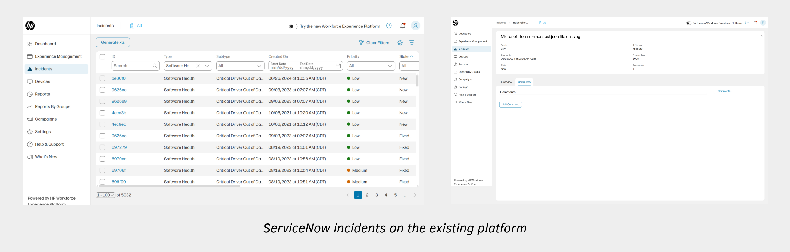
- Next, I analyzed the competitors like Nexthink, 1E, Tanium etc. and I figured it might be important for the IT admins to know important KPIs such as-
a. Apps, app versions and binary files causing most errors
b. List of impacted devices
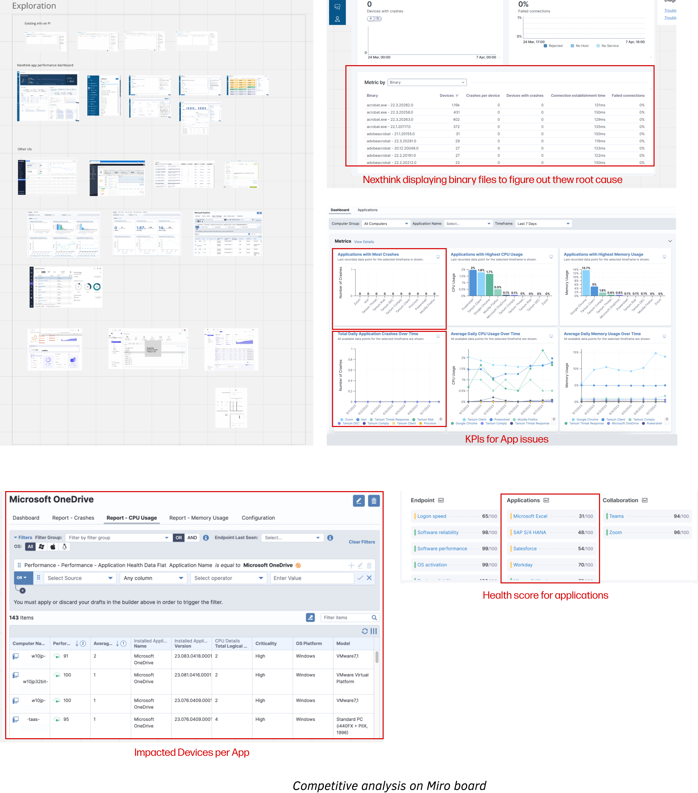
-
Lastly, I created proto-personas using all my product knowledge and validated it with the PMs
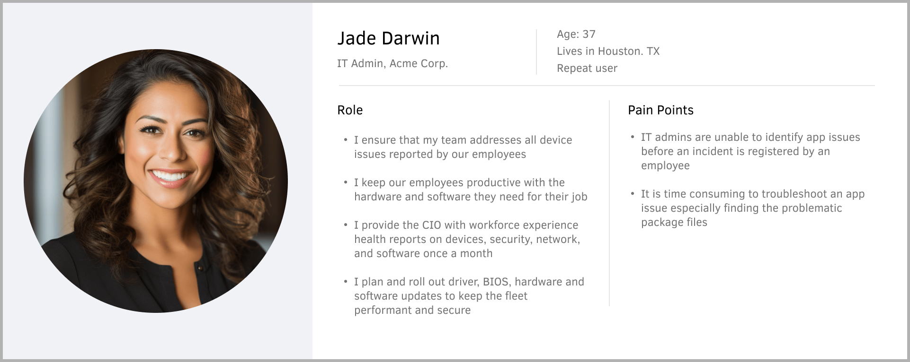
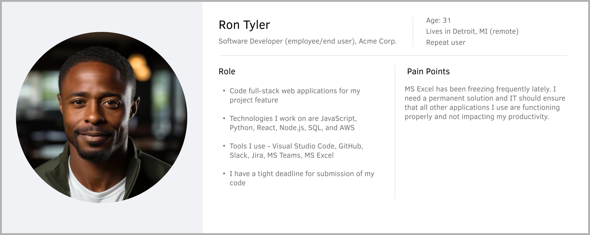
Pain Points
I figured the core pain points of IT admins through my own explorations and conversations with the PMs-
- IT admins are unable to identify app issues before an incident is registered by an employee on ServiceNow
- It is time consuming to locate the exact binary file causing issue in an app
- It is not possible to fix issues in bulk across impacted devices; they have to be resolved manually
- Information on the least isn't available to them to prioritize their remediation
- IT admins don't have a high-level overview of an app's performance over time
Solutions
Considering all the pain points and explorations, I suggested the following assumptions as a solution-
- Introduce an app score metric for the users to quantify the app health in an organization over a period of time
- Show the real-time data of the least performing apps in an organization over time
- Provide a list of apps that are crashing, including details on the number of crashes/freezes, affected devices, the least stable version, and the recommended version
- Display a list of impacted devices per app
- View binary files causing errors per device
- Recommend solutions to the user to improve their app score
Userflows
I led several brainstorming sessions with the stakeholders to figure out how the Application Score could fit in along with other existing scores and its weightage. In these sessions, I figured out the information architecture of this feature.
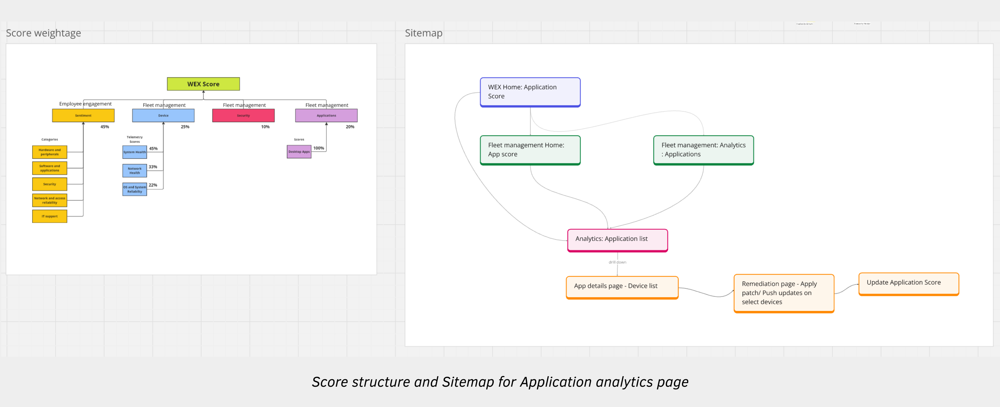
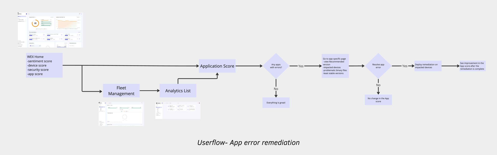
Wireframes
I made several iterations based on continuous feedback from the product managers, engineering team, UX writer and the visual designer. At this point in time, I had the opportunity to show these wireframes to some of the HP’s IT admins.
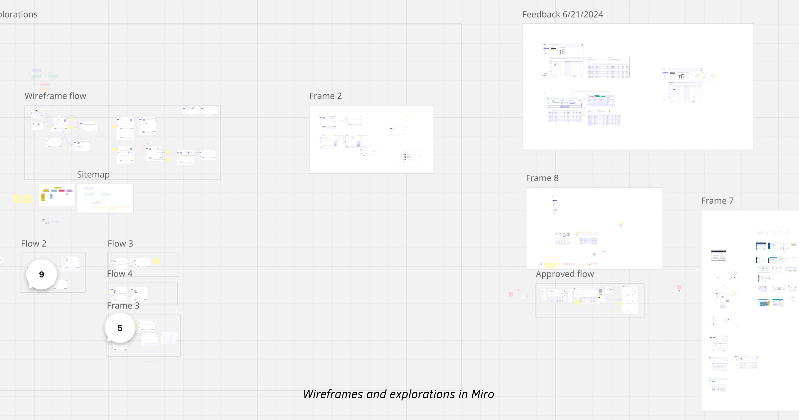

Feedback from Stakeholders
By Engineering Team
- Displaying icons for apps isn't scalable - the devs need to update the logo each time an app changes. Making it dynamic isn't feasible and could also raise compliance concerns.
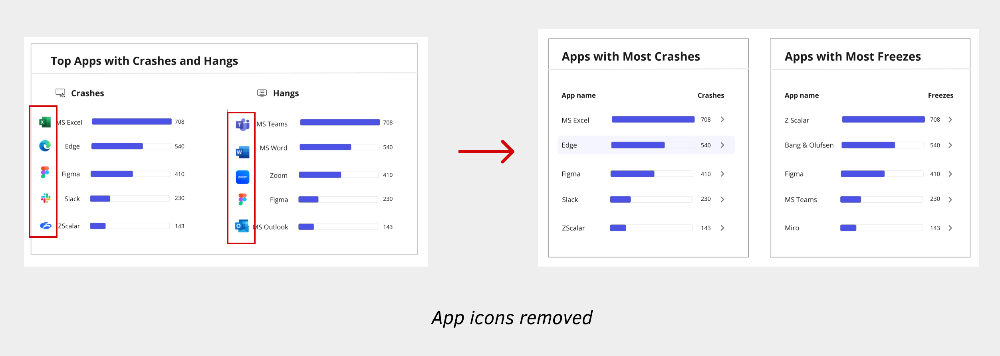
- Unable to display past 3 months of app data - the devs were unable to store past 3 months of app errors due to infrastructure issues. We resorted to displaying 7 days of real-time app data and communicating it with the user by adding help section at the top of the page.
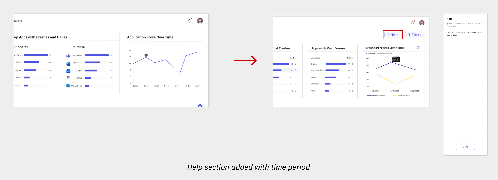
- The devs also recommended taking edge cases into account, such as when data is loading, unavailable, or when server errors occur
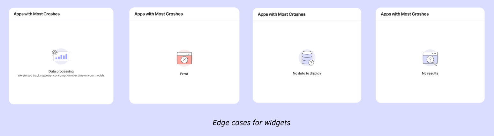
By Product Manager
- The PM mentioned that application crashes/freezes over time along with the impacted devices would give them more specific data on the app health rather than application score over time
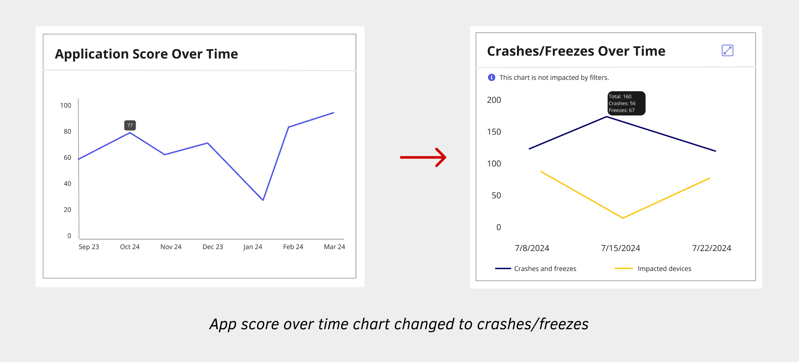
- Displaying the top 3 least stable and most stable versions might not be very meaningful, as an app typically has only 5-8 versions within an organization. This could result in the same app version appearing in both the least stable and most stable lists.
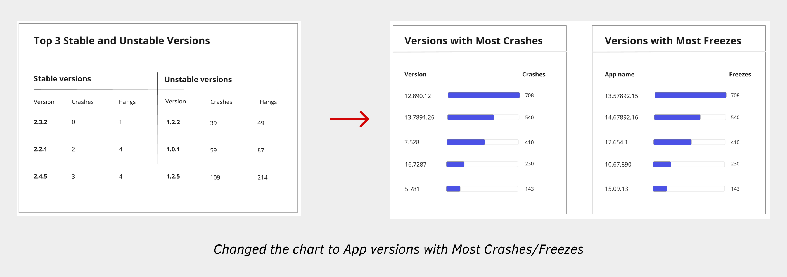
- Include table columns such as Recommended Version, Least Stable Version and UI Availability, Last Crash Occurrence, Last Freeze Occurrence
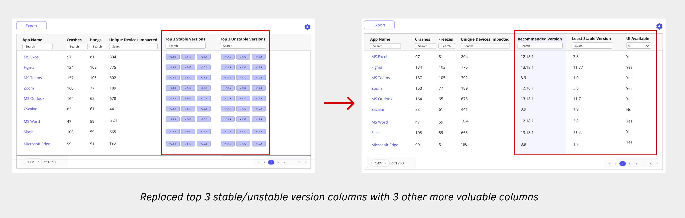
By Internal Users
Internal IT admins found a lot of valuable information on the screens and were excited looking at the app error remediation flow. Most of the assumptions worked really well for the users. There were a couple of things that they wanted to change that could be more beneficial-
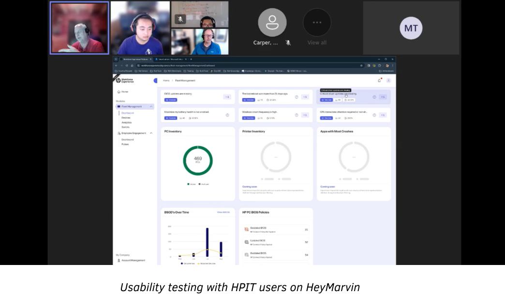
- They felt that the Recommended Actions were placed too far down and needed to be visible immediately since they are actionable
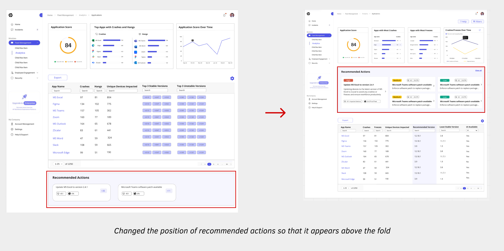
- They were confused by the meaning of ‘+35’ on the Actions card and couldn't grasp the impact of an action
- They didn’t expect the recommended action card to be clickable because of no affordances
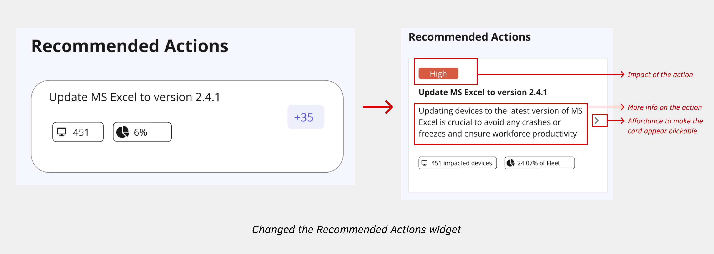
- They required page-specific filters to update data and charts, allowing them to analyze the data based on various categories like device model, manufacturer, OS version, and more
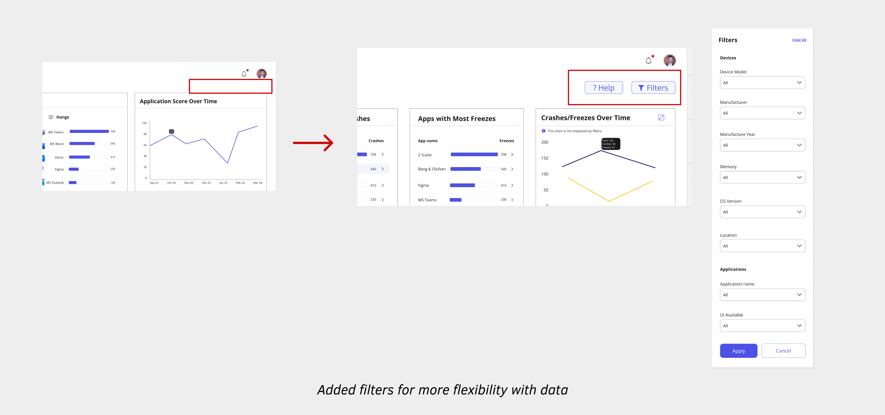
By UX Writer
- Replace "Hangs" with "Freezes" as it's a more widely recognized industry term
- Replace “Top Apps with Crashes” with “Apps with Most Crashes” as it clearly indicates the apps experiencing the highest number of crashes
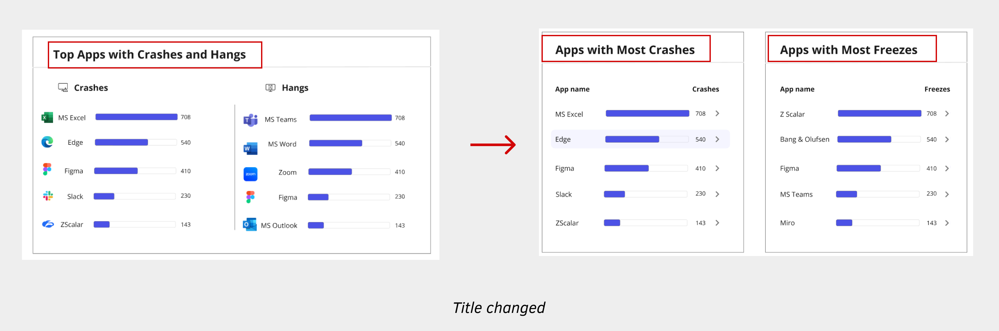
Final Wireframe

High-fidelity Flow
Outcomes
The feature delivered exceptional results within its first year of deployment:
- Achieved 811 direct customer adoptions, reflecting a 35% month-over-month (MoM) growth
- Scaled to 2.3 million device seats, surpassing the 2 million target by Q3 2025 with an 8% MoM increase.
- Drove strong engagement, with 921 weekly active users across customers and partners
- Tesla highlighted the new Application Error Insights as a key factor in mitigating the CrowdStrike fleet impact
- Recognized as visionary in the First 2024 Gartner Magic Quadrant for Digital Employee Experience Management Tools
- Honoured with the UX Design Award | Product 2025 for its unified design and accessibility in Enterprise IT Management
Future Improvements
- Allow users to prioritize monitored and unmonitored apps
- Add software utilization data to understand % of crashes and freezes per usage
- Include web apps in addition to desktop apps
- Show real-time progress for remediations
- Store more than 7 days of data at the Application level